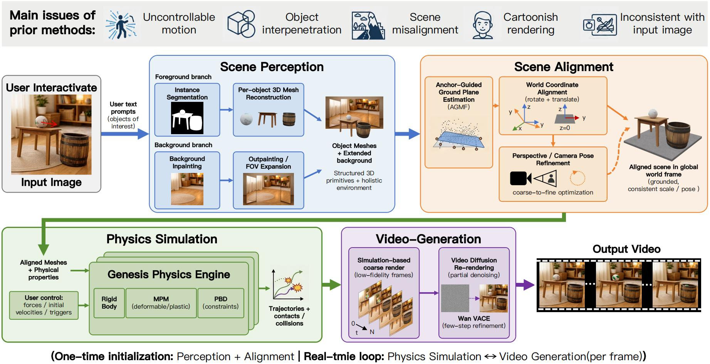
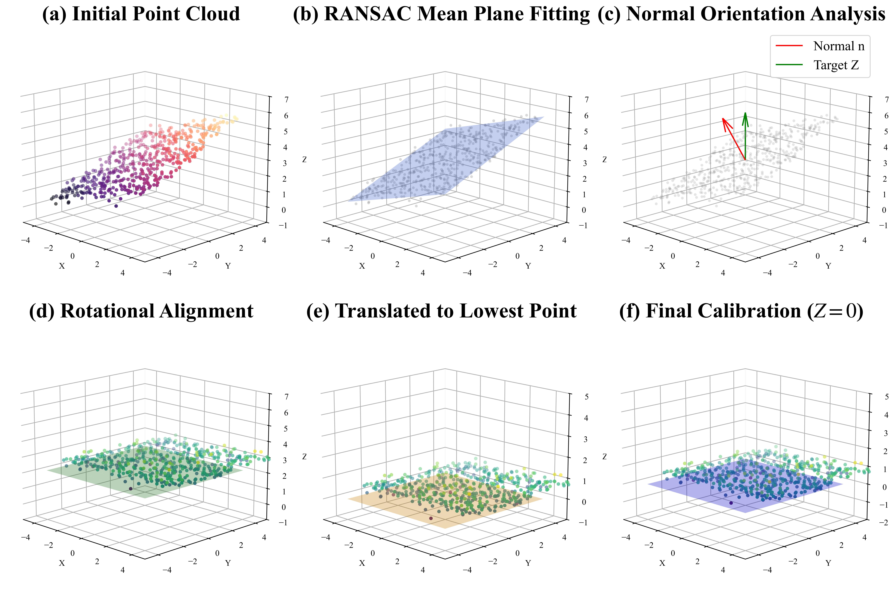
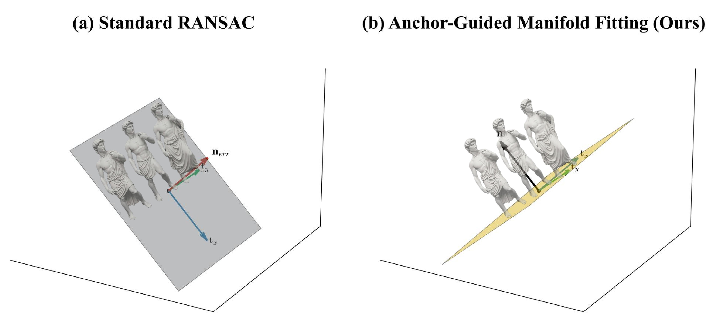
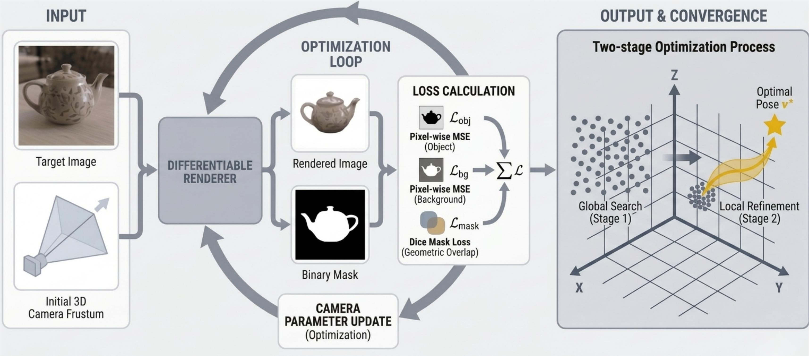
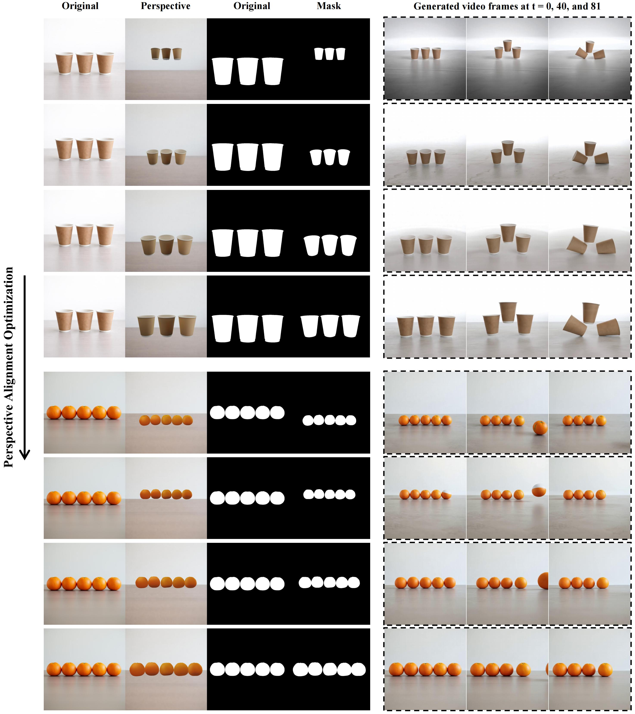
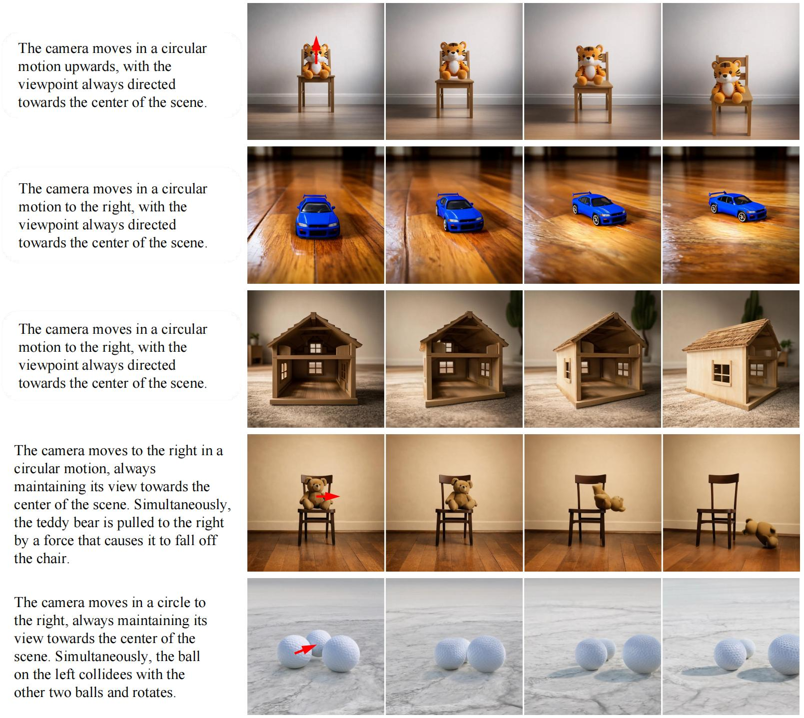

Abstract
Recent generative video models achieve impressive visual quality but remain constrained by limited physical consistency and controllability. Existing video generation methods provide minimal physical control, and single-image-to-3D conversion approaches often suffer from object interpenetration. Furthermore, physics-based scene-level 3D generation methods exhibit spatial misalignment, stylized artifacts, and inconsistencies with the input data, restricting their use in realistic interactive video synthesis. We propose PhysOmni, a training-free framework that converts a single image into a physically consistent and controllable video through holistic scene-level 3D reconstruction. By representing the full scene geometry in a unified spatial coordinate system, PhysOmni resolves object penetration and alignment ambiguity. Unlike prior methods, this formulation enables accurate scene-level multi-object interactions and introduces richer, complex control types for advanced mechanics-based manipulation. By decoupling simulation from rendering, PhysOmni bypasses latency-heavy priors, achieving real-time physical interaction previews while preserving photorealistic visual fidelity. Experimental results demonstrate that PhysOmni substantially outperforms prior methods in physical fidelity, spatial coherence, and controllability.
Motivation
Framework Overview

Overview of the PhysOmni framework. (a) Given a single input image and user controls, the pipeline applies Scene Perception to reconstruct 3D object meshes and synthesize a background environment. (b) These components are grounded in a unified global coordinate system through Scene Alignment to ensure geometric consistency, while a VLM-driven parameter estimation module concurrently deduces the physical properties of each entity. (c) Guided by these semantic priors, the Physics Simulation stage—built on Genesis with rigid-body, MPM, and PBD solvers chosen per material type—computes physically compliant trajectories and collision responses. (d) Finally, WonderTrace bridges the visual domain gap by refining the coarse simulation renders into photorealistic video sequences, driven by Wan2.1 VACE (default fast) or Wan2.2 VACE 14B (high-quality offline). After one-time perception & alignment, the simulation–rendering loop runs at interactive rates (~15 FPS on a single H100).
Qualitative Comparisons
Comparison with state-of-the-art video generation models. The input includes an image, a motion prompt, and a text prompt.
Scene Alignment
To resolve the spatial misalignment introduced by egocentric reconstruction, we map all reconstructed meshes into a unified world coordinate system anchored to a canonical ground plane.
For multi-object scenes, the vertices of all meshes are aggregated into a global point cloud and a dominant ground plane is fit; a rigid transformation derived via Rodrigues’ formula then aligns its normal to z-up and anchors the lowest point of the scene to the origin, yielding a gravity-aligned world frame W where the ground plane coincides with z=0.
To avoid the failure modes of standard RANSAC in cluttered scenes, we further introduce Anchor-Guided Manifold Fitting (AGMF): only points near each object’s local z-minimum are sampled as ground anchors, and a robust M-estimator (Huber/Tukey) is minimised over this anchor set—decoupling the ground manifold from vertical distractors such as torsos or walls.

z-up (d), the lowest point is translated to the origin (e), and the final calibrated frame coincides with z=0 (f).

Pbase from object extrema, decoupling the ground manifold from vertical structures and recovering a physically plausible surface normal n.
Perspective Alignment

Differentiable rendering pipeline for explicit camera pose estimation.
The framework optimises the camera spatial parameters by minimising the discrepancy between the rendered output and the target image: a renderer synthesises an image and a binary silhouette mask under the current pose, and these are compared with the target through a region-aware appearance loss (foreground + background L1) and a Dice-based mask loss.
Because the rendering loss landscape is non-convex, a coarse-to-fine strategy is adopted—a global stochastic search over a bounded space B first identifies a reliable initialisation, then the derivative-free Powell method under box constraints performs local refinement, converging to the final pose v∗.

Qualitative visualization of the perspective alignment optimisation process. From top to bottom, the rendering loss gradually decreases as the camera parameters are refined. Each row shows the original image, the rendered perspective under the current camera parameters, and the corresponding binary mask. Suboptimal alignment at this stage would otherwise lead to significant geometric distortion and rendering artifacts in downstream synthesis; our coarse-to-fine optimisation enables robust convergence and progressively improved alignment.
WonderTrace

Illustration of camera motion and viewpoint variation. WonderTrace bridges the gap between visually coarse simulator output and photorealistic video by treating the latent space of a state-of-the-art video model as a rendering prior: simulated states and trajectories are projected into conditioning signals (depth, optical flow, object masks), and a partial denoising strategy applies only the final diffusion steps—preserving the simulator’s spatiotemporal structure while enriching the frames with high-frequency visual detail. To support novel-view synthesis and aggressive camera trajectories without out-of-bounds artifacts, the panoramic background generated during Scene Perception is reused here: the rerendered, expanded background is composited with the dynamic foreground in a dual-stream design, ensuring continuous visual fidelity and temporal consistency under entirely novel camera trajectories.
BibTeX
@misc{zhang2026physomniphysicsgroundedmultiobjectscene,
title={PhysOmni: Physics-Grounded Multi-Object Scene Generation from a Single Image with Real-Time Interaction},
author={Xin Zhang and Yabo Chen and Yijie Fang and Wanying Qu and Haibin Huang and Chi Zhang and Feng Xu and Xuelong Li},
year={2026},
eprint={2605.20290},
archivePrefix={arXiv},
primaryClass={cs.GR},
url={https://arxiv.org/abs/2605.20290},
}